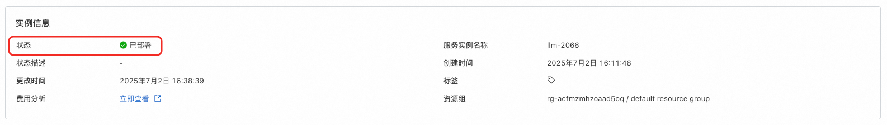

基于ACS集群的大模型部署文档
部署说明
本方案通过阿里云计算巢服务实现开箱即用的大模型推理服务部署，支持以下场景： - 新建ACS集群：用户可以选择直接创建一个ACS集群，计算巢会在用户账号下一键创建ACS集群和OSS Bucket，完成了模型上传和Bucket的挂载后会自动部署模型，最后会自动创建负载均衡实现内、公网的访问。 - 选择已有ACS、ACK集群：用户可以选择使用已有的ACS或者ACK集群，计算巢会在用户账号下创建OSS Bucket（也可以选择已有的Bucket），完成了模型上传和Bucket的挂载后会自动部署模型，最后会自动创建负载均衡实现内、公网的访问。
本方案基于以下核心组件：
- vLLM：提供高性能并行推理能力，支持低延迟、高吞吐的LLM推理（支持Qwen、DeepSeek全系列模型）
- SGLang: SGLang 是一个适用于大语言模型和视觉语言模型的快速服务框架。
- ACS集群：提供全托管的Kubernetes环境，支持Serverless工作负载弹性伸缩
- P16EN/GU8TF GPU加速：支持多种算力规格，满足不同模型规模的推理需求
部署后，用户可通过私有/公网API调用模型服务，资源利用率提升数倍，开发者无需关注底层容器编排与资源调度，仅需在计算巢控制台页面选择模型即可完成一键部署。
整体架构

计费说明
| 资源类型 | 计费模式 | 关键配置说明 |
|---|---|---|
| ACS集群 | 按量付费 | 根据所选GPU类型和数量计费，GU8TF/GU8TEF/P16EN规格不同价格不同 |
| ECS跳板机 | 按量付费 | ecs.u1-c1m2.xlarge（4C8G），用于集群管理，部署完成后可安全释放 |
| OSS存储 | 按量付费 | 存储模型文件，建议选择与集群同地域的存储类型 |
| NAT网关 | 按量付费 | 当开启公网访问时自动创建，按使用时长和带宽计费 |
RAM账号所需权限
部署实例需要对部分阿里云资源进行访问和创建操作。因此您的账号需要包含如下资源的权限。且需要开通ACS服务，开通后可以在ACS控制台右上角看到： 开通状态：GPU 按量付费已开通, GPU 容量预留已开通, CPU 按量付费已开通。
| 权限策略名称 | 备注 |
|---|---|
| AliyunECSFullAccess | 管理云服务器服务（ECS）的权限 |
| AliyunVPCFullAccess | 管理专有网络（VPC）的权限 |
| AliyunROSFullAccess | 管理资源编排服务（ROS）的权限 |
| AliyunCSFullAccess | 管理容器服务（CS）的权限 |
| AliyunComputeNestUserFullAccess | 管理计算巢服务（ComputeNest）的用户侧权限 |
| AliyunOSSFullAccess | 管理网络对象存储服务（OSS）的权限 |
除此之外，部署前需要联系PDSA添加GPU白名单。
部署流程
-
单击部署链接 。根据界面提示填写参数，可以看到对应询价明细，确认参数后点击下一步：确认订单。
 这里也可以选择已有ACS集群,如下所示：
这里也可以选择已有ACS集群,如下所示：
-
点击下一步：确认订单后可以也看到价格预览，随后点击立即部署，等待部署完成。

-
等待部署完成后就可以开始使用服务，进入服务实例详情查看如何私网访问指导。如果选择了支持公网访问，则能看到公网访问指导。

使用说明
私网API访问
- 在和服务器同一VPC内的ECS中访问概览页的私网API地址。访问示例如下：
# 私网有认证请求，流式访问，若想关闭流式访问，删除stream即可。
curl http://{$PrivateIP}:8000/v1/chat/completions \
-H "Content-Type: application/json" \
-H "Authorization: Bearer ${API_KEY}" \
-d '{
"model": "ds",
"messages": [
{
"role": "user",
"content": "给闺女写一份来自未来2035的信，同时告诉她要好好学习科技，做科技的主人，推动科技，经济发展；她现在是3年级"
}
],
"max_tokens": 1024,
"temperature": 0,
"top_p": 0.9,
"seed": 10,
"stream": true
}'
公网API访问
- 如果想通过公网访问API地址，部署时如果选择了支持公网访问，则直接通过公网IP访问即可，示例如下：
curl http://${PublicIp}:8000/v1/chat/completions \
-H "Content-Type: application/json" \
-d '{
"model": "ds",
"messages": [
{
"role": "user",
"content": "给闺女写一份来自未来2035的信，同时告诉她要好好学习科技，做科技的主人，推动科技，经济发展；她现在是3年级"
}
],
"max_tokens": 1024,
"temperature": 0,
"top_p": 0.9,
"seed": 10,
"stream": true
}'
- 如果未选择支持公网访问，则需要手动在集群中创建一个
LoadBalance，示例如下（deepseek-r1，如果是qwq-32b，labels.app需要改为qwq-32b)：
apiVersion: v1
kind: Service
metadata:
annotations:
service.beta.kubernetes.io/alibaba-cloud-loadbalancer-address-type: "internet"
service.beta.kubernetes.io/alibaba-cloud-loadbalancer-ip-version: ipv4
labels:
app: deepseek-r1
name: svc-public
namespace: llm-model
spec:
externalTrafficPolicy: Local
ports:
- name: serving
port: 8000
protocol: TCP
targetPort: 8000
selector:
app: deepseek-r1
type: LoadBalancer
快速更换模型、GPU规格、Pod数量
计算巢支持实例变配功能，可以一键更换模型、GPU规格、Pod数量，具体参考如下说明：
服务实例部署完成后，进入服务实例详情页面，点击右上角的修改配置按钮，选择需要修改的参数，修改后可以查看价格和变配前后的参数变化，最后点击确认。（变配GPU前请确保原所选地域与可用区有库存）
实例状态由变配中变为已成功表示变配成功。 
手动重新部署模型
对于不更换模型、仅改变部署参数的情况，可以参考如下说明重新部署模型：
通过跳板机上执行kubectl apply命令或者直接在控制台手动输入模板来重新部署。
-
跳板机方式
- 进入计算巢控制台服务实例的资源界面，可以看到对应的ECS跳板机，执行远程连接，选择免密登录。

- 进入跳板机后执行命令
bash su root # 修改部署参数 vi /model.yaml # 如果需要更改模型参数，修改了model.yaml后直接执行apply命令即可 kubectl apply -f /model.yaml
- 进入计算巢控制台服务实例的资源界面，可以看到对应的ECS跳板机，执行远程连接，选择免密登录。
-
控制台方式
- 进入计算巢控制台，点击服务实例，点击资源，找到对应的ACS实例，点击进入。
- 进入ACS控制台后点击工作负载，查看无状态，以qwq-32b为例：可以看到对应的Deployment。

- 点击该Deployment后进入详情页面，点击编辑可以修改一些基本参数，或者点击查看yaml修改后更新。

对于更换模型的情况，可以参考如下文档：
ACS集群形态的LLM大模型推理镜像使用指导_PG1阿里云产品-阿里云帮助中心 使用ACS GPU算力构建DeepSeek满血版模型推理服务_容器计算服务(ACS)-阿里云帮助中心
进阶教程
- 除了部署服务实例时可以选择Fluid配置，也可以后续自定义配置Fluid实现模型加速
Fluid 是一种基于 Kubernetes 原生的分布式数据集编排和加速引擎，旨在优化数据密集型应用（如AI推理、大模型训练等场景）的性能。如果服务需要在弹性伸缩时快速启动， 可以考虑部署Fluid，具体可以参考文档：Fluid。 经测试，采用Fluid的加速，根据缓存大小，模型加载速度可以缩短至50%，在应对一些弹性伸缩的场景下，可以快速加载模型，显著提高性能。如下所示，可以仅修改具体的BucketName、ModelName和具体的JindoRuntime参数：
apiVersion: data.fluid.io/v1alpha1
kind: Dataset
metadata:
name: llm-model
namespace: llm-model
spec:
placement: Shared
mounts:
- mountPoint: oss://${BucketName}/llm-model
options:
fs.oss.endpoint: oss-${RegionId}-internal.aliyuncs.com
name: models
path: "/"
encryptOptions:
- name: fs.oss.accessKeyId
valueFrom:
secretKeyRef:
name: oss-secret
key: akId
- name: fs.oss.accessKeySecret
valueFrom:
secretKeyRef:
name: oss-secret
key: akSecret
---
apiVersion: data.fluid.io/v1alpha1
kind: JindoRuntime
metadata:
name: llm-model
namespace: llm-model
spec:
networkmode: ContainerNetwork
replicas: ${JindoRuntimeReplicas} # 设置副本数,根据实际的模型磁盘占用进行设置
master:
podMetadata:
labels:
alibabacloud.com/compute-class: performance
alibabacloud.com/compute-qos: default
worker:
podMetadata:
labels:
alibabacloud.com/compute-class: performance
alibabacloud.com/compute-qos: default
annotations:
kubernetes.io/resource-type: serverless
resources:
requests:
cpu: 16
memory: 128Gi
limits:
cpu: 16
memory: 128Gi
tieredstore:
levels:
- mediumtype: MEM
path: /dev/shm
volumeType: emptyDir
quota: 128Gi
high: "0.99"
low: "0.95"
---
apiVersion: data.fluid.io/v1alpha1
kind: DataLoad
metadata:
name: llm-model
namespace: llm-model
spec:
dataset:
name: llm-model
namespace: llm-model
loadMetadata: true
Benchmark
本服务基采用vllm自带的benchmark进行测试，采用的压测数据集：https://www.modelscope.cn/datasets/gliang1001/ShareGPT_V3_unfiltered_cleaned_split/files， 整体压测流程：
- 创建一个Deployment，使用vllm-benchmark镜像。在容器中执行数据集下载、压测操作 使用下面的yaml创建Deployment前需要替换部分参数
| 替换参数 | 参数含义 | 参数值示例/说明 |
|---|---|---|
$POD_IP |
运行 deepseek-r1 的 Pod IP | kubectl get pod -n llm-model -l app=$(kubectl get deployment -n llm-model -l app -o jsonpath='{.items[0].spec.template.metadata.labels.app}') -o jsonpath='{.items[0].status.podIP}' |
$API_KEY |
服务认证密钥 | 在服务实例详情页中获取（形如 sk-xxxxxxxxxxxxxxxxxxxxxxxxxxxxxxxx） |
$MODEL_PATH |
模型存储路径 | QwQ-32b: /llm-model/Qwen/QwQ-32BQwen3-32b: /llm-model/Qwen/Qwen3-32BQwen3-235b-A22b: /llm-model/Qwen/Qwen3-235B-A22BDeepSeek-R1_671b: /llm-model/deepseek-ai/DeepSeek-R1DeepSeek-R1_32b: /llm-model/deepseek-ai/DeepSeek-R1-Distill-Qwen-32BDeepSeek-R1_70b: /llm-model/deepseek-ai/DeepSeek-R1-Distill-Llama-70B |
$SERVED_MODEL_NAME |
服务部署的模型名称 | QwQ-32b: Qwen/QwQ-32BQwen3-32b: Qwen/Qwen3-32BQwen3-235b-A22b: Qwen/Qwen3-235B-A22BDeepSeek-R1_671b: deepseek-ai/DeepSeek-R1DeepSeek-R1_32b: deepseek-ai/DeepSeek-R1-Distill-Qwen-32BDeepSeek-R1_70b: deepseek-ai/DeepSeek-R1-Distill-Llama-70B |
apiVersion: apps/v1
kind: Deployment
metadata:
name: vllm-benchmark
namespace: llm-model
labels:
app: vllm-benchmark
spec:
replicas: 1
selector:
matchLabels:
app: vllm-benchmark
template:
metadata:
labels:
app: vllm-benchmark
spec:
volumes:
- name: llm-model
persistentVolumeClaim:
claimName: llm-model
containers:
- name: vllm-benchmark
image: kube-ai-registry.cn-shanghai.cr.aliyuncs.com/kube-ai/vllm-benchmark:v1
command:
- "sh"
- "-c"
- |
# 安装依赖
yum install -y epel-release && \
yum install -y git git-lfs && \
git lfs install &&
# 下载数据集
git clone https://www.modelscope.cn/datasets/gliang1001/ShareGPT_V3_unfiltered_cleaned_split.git /root/ShareGPT_V3_unfiltered_cleaned_split
# 执行基准测试
export OPENAI_API_KEY=$API_KEY
python3 /root/vllm/benchmarks/benchmark_serving.py \
--backend vllm \
--model $MODEL_PATH \
--served-model-name $SERVED_MODEL_NAME \
--trust-remote-code \
--dataset-name sharegpt \
--dataset-path /root/ShareGPT_V3_unfiltered_cleaned_split/ShareGPT_V3_unfiltered_cleaned_split.json \
--sonnet-input-len 1024 \
--sonnet-output-len 6 \
--sonnet-prefix-len 50 \
--num-prompts 200 \
--request-rate 1 \
--host $POD_IP \
--port 8000 \
--endpoint /v1/completions \
--save-result
# 保持容器运行
sleep inf
volumeMounts:
- mountPath: /llm-model
name: llm-model
- 直接在acs控制台查看容器日志或者进入容器查看容器日志

测试结果示例：
plaintext
============ Serving Benchmark Result ============
Successful requests: 200
Benchmark duration (s): 272.15
Total input tokens: 43390
Total generated tokens: 39980
Request throughput (req/s): 0.73
Output token throughput (tok/s): 146.91
Total Token throughput (tok/s): 306.34
---------------Time to First Token----------------
Mean TTFT (ms): 246.46
Median TTFT (ms): 244.58
P99 TTFT (ms): 342.11
-----Time per Output Token (excl. 1st token)------
Mean TPOT (ms): 130.30
Median TPOT (ms): 130.12
P99 TPOT (ms): 139.09
---------------Inter-token Latency----------------
Mean ITL (ms): 129.89
Median ITL (ms): 125.40
P99 ITL (ms): 173.20
==================================================